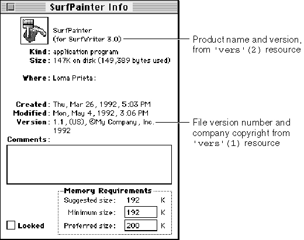

Legacy Document
Important: The information in this document is obsolete and should not be used for new development.
Important: The information in this document is obsolete and should not be used for new development.


Using Finder Information in the Catalog File
A catalog file exists on every volume to maintain relationships between the files and directories on that volume. (A volume is any storage medium formatted to contain files.) Although it's used mostly by the File Manager, the catalog file also contains information used by the Finder. The information for files is listed in file information records (data structures of typeFInfo) and in extended file information records (data structures of typeFXInfo). The information for directories is listed in directory information (DInfo) records and in extended (DXInfo) directory information records.Figure 7-13 The version data in the information window

The Finder manipulates the fields in the file information, directory information, and extended directory information records; your application shouldn't have to directly check or set any of these fields.
Normally, your application sets the file type and the creator information in fields of the file's file information record when your application creates a new file; for example, the File Manager function
FSpCreate(described in Inside Macintosh: Files) takes a creator and a file type as parameters. The Finder manipulates the other fields in the file information record, which is shown here:
TYPE FInfo = RECORD fdType: OSType; {file type} fdCreator: OSType; {file creator} fdFlags: Integer; {Finder flags} fdLocation: Point; {file's location in window} fdFldr: Integer; {directory that contains file} END;After you have created a file, you can use the File Manager functionFSpGetFInfoto return the file information record, then change thefdTypeandfdCreatorfields by using the File Manager functionFSpSetFInfo.You can check the information in this record by calling the File Manager function
FSpGetFInfoorPBGetCatInfo. In particular, you may want to check the file type
or creator for a file, or you may want to check or set one of your document's Finder flags. See "File Information Record" beginning on page 7-44 for a list of all the Finder flags. The only Finder flags you might ever want to set are described here:
isInvisible. This flag specifies that a file is invisible from the Finder and from the Standard File Package dialog boxes. Making a file invisible is generally not recommended. Not even temporary files need to be invisible because the Temporary Items folder into which they should be written is invisible. The Temporary Items folder is described in "Using the System Folder and Its Related Directories" beginning on page 7-39.hasBundle. This flag specifies that a file has a bundle resource that associates the file with your own icons. When the Finder displays or manipulates a file, it checks the file'shasBundlebit (also called the bundle bit). If that bit is not set, the Finder displays a default icon for that file type. If thehasBundlebit is set, the Finder checks thehasBeenInitedbit. If thehasBeenInitedbit is set, the Finder uses the information in the desktop database to display that file's icon. If thehasBeenInitedbit is not set, the Finder installs the information from the bundle resource in the desktop database and sets thehasBeenInitedbit. Most development environments provide a simple tool for setting the bundle bit when you create your application.nameLocked. This flag specifies that a file cannot be renamed from the Finder and that the file cannot have customized icons assigned to it by users.isStationery. This flag specifies that a file is a stationery pad. To support
stationery pads, your application should check this bit for every document passed to it by either the Finder or the Standard File Package. (The File Manager functionsStandardGetFileandCustomGetFilereturn this flag in thesfFlagsfield of the standard file reply record.) If theisStationerybit is set for a file that a user wants to open, your application should copy the template's contents into a new document and open the document in an untitled window. Stationery pads are described in the next section.isShared. This flag specifies that a file is an application that multiple users on a network can execute simultaneously.hasCustomIcon. This flag specifies that a file has a customized icon. "Creating Customized Document Icons" beginning on page 7-16 explains how users or your application can use customized icons.